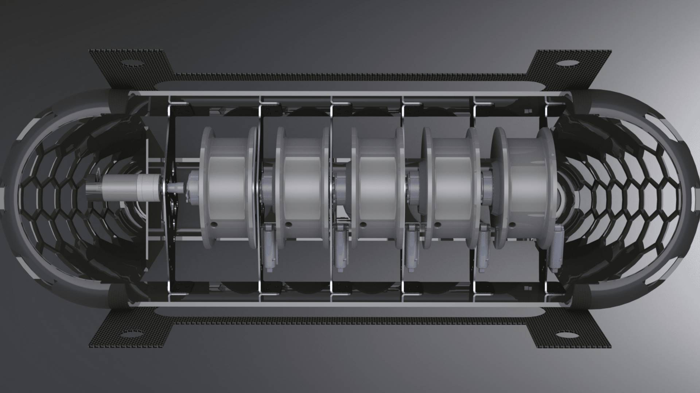
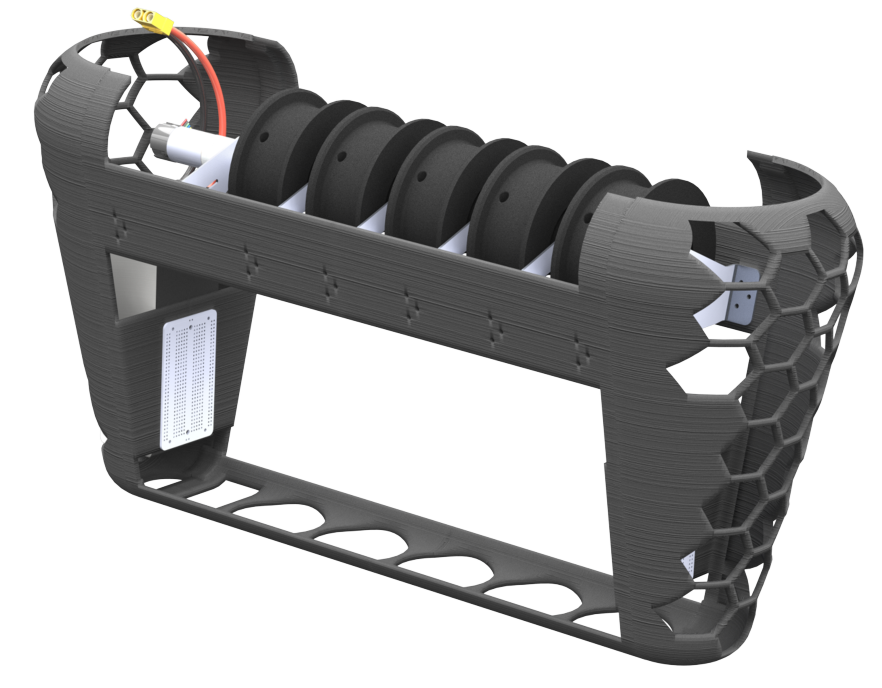
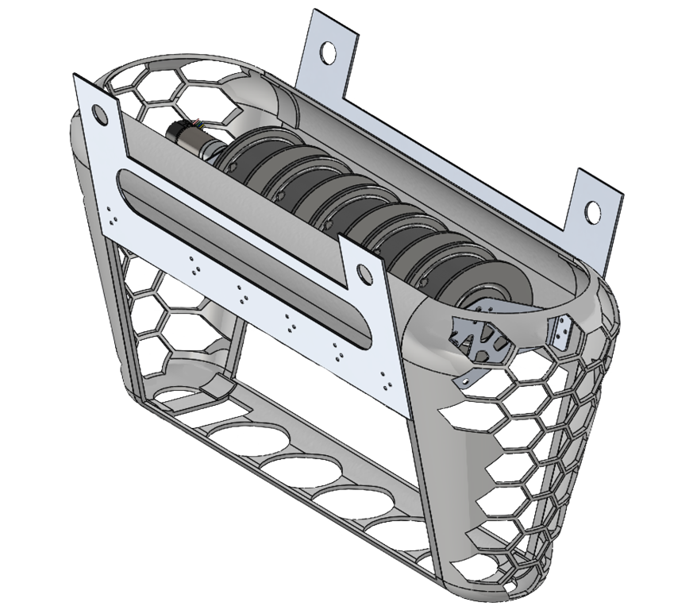
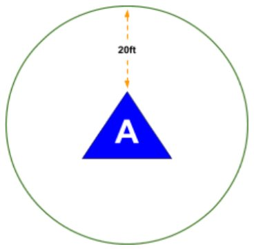
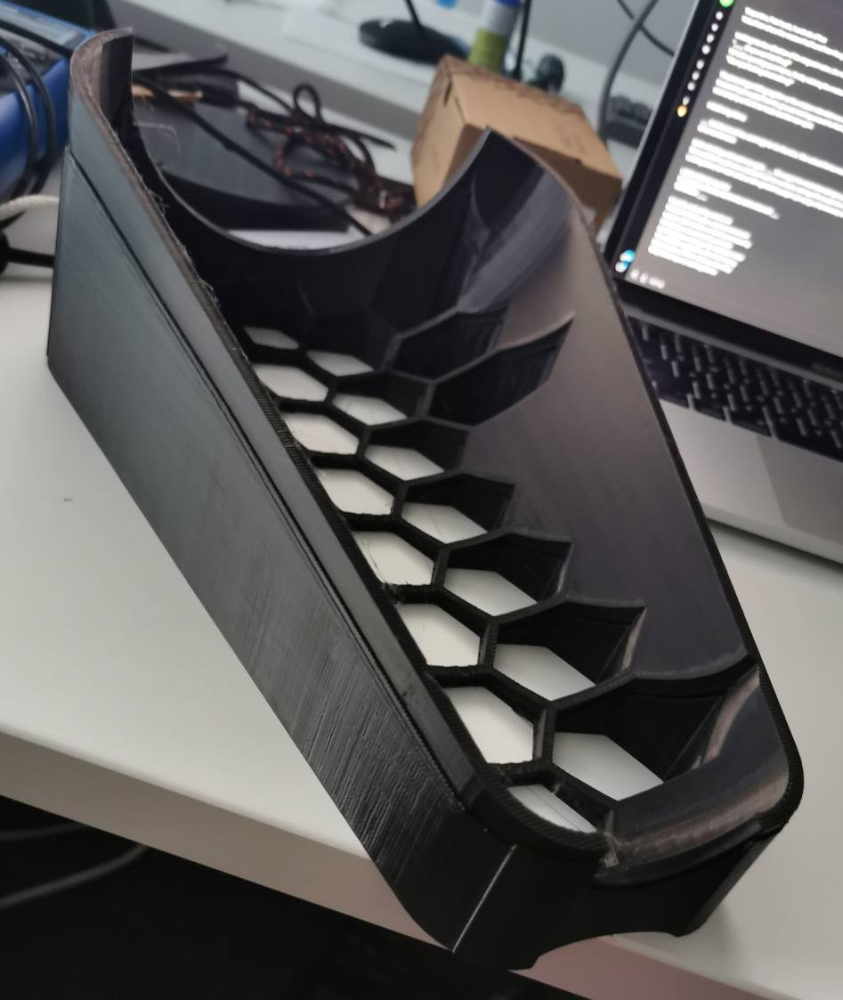
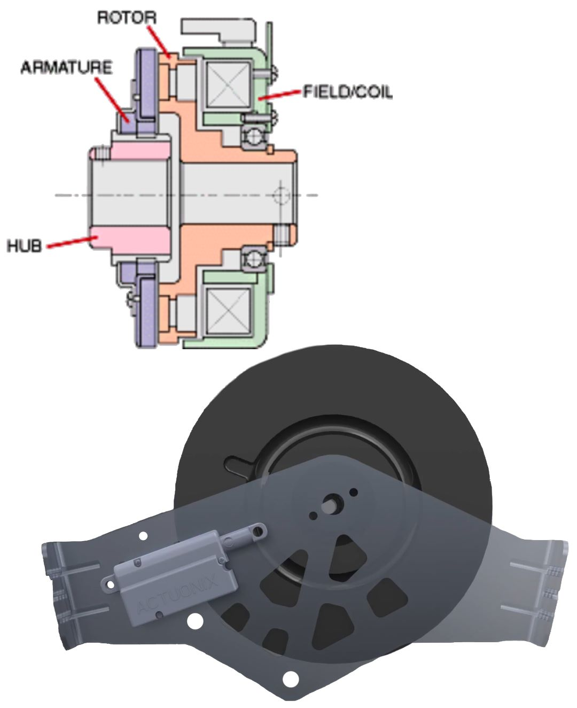
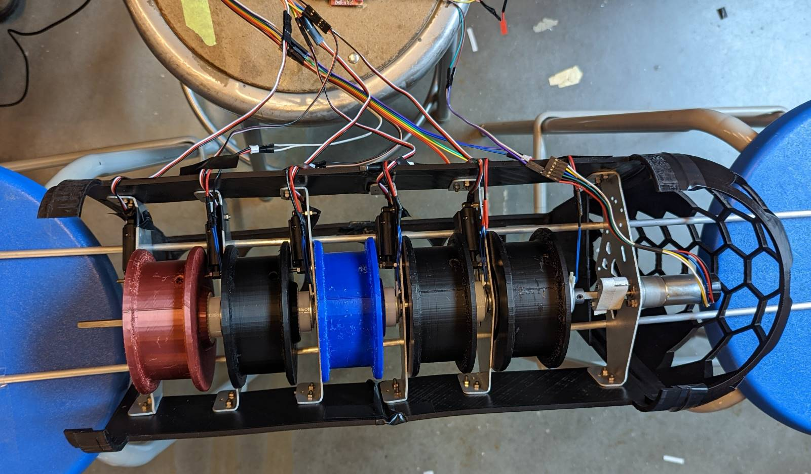
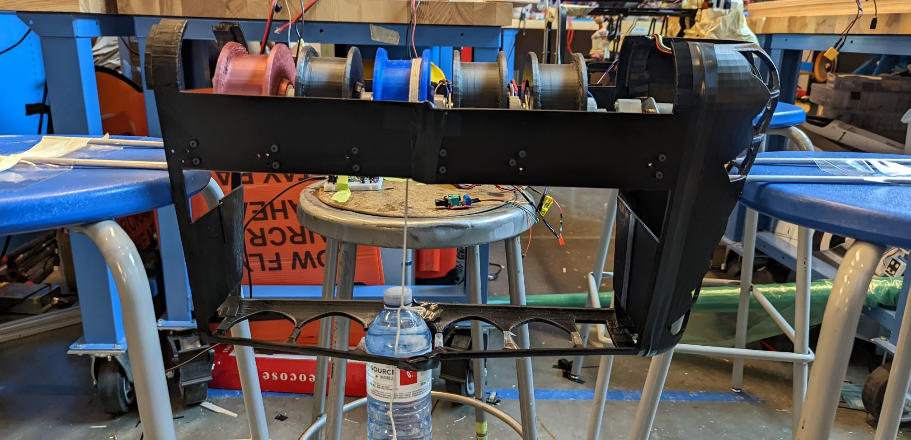

For the international Student Unmanned Aerial Systems (SUAS) 2023 Competition, university teams were tasked with constructing an aircraft and payload mechanism to identify and deliver packages to designated drop zones. In order to accommodate multiple payloads, UBC UAS' mechanical team had to create a mechanism which would not only protect the payload during flight, but allow non-sequential release, and safely lower the payload to the ground.
- I was one of the leads for the mechanical team, overseeing the design and implementation of the payload deployment system and enclosure.
- I guided a group of 8 students in the ideation and implementation of a controls system leveraging electromagnetic clutches and linear actuators.
- 3.5kg (consolidated weight) payload + enclosure mounts firmly to UAS’ Dragonfly VTOL aircraft
- Surface modeled enclosure shell with light-weighting holes minimize mass of non-essential components
- Aluminum brackets rigidly secure payload deployment system to the chassis increasing structural rigidity
- Brushless DC motor continuously drives winch shaft allowing PID control loop to modulate descent speed
- Electromagnetic clutches couple payloads to drive shaft allowing independent deployment, with linear actuators locking initial descent

Ideation:
The first step was to work with my team to examine the competition guidelines and determine limitations. The payload deployment mechanism would have to release 5x 500g payloads from a height of 75ft AGL onto 20ft - radius targets. The payload must hit the ground with a ‘soft descent’ (decided to be < 2m/s), and be easily removable from any deployment mechanism.

Enclosure Modeling:
The enclosure shell was split into 4 parts to accommodate the iteration cycle, with the nose / tail and the sides being mirrors of one another for ease of manufacturing and assembly. Once the enclosure length was determined, I guided the students through the surface modeling process making use of splines, sweeps, lofts, and knitting.
From here, I aided in transferring the models to analysis software in order to perform Computational Fluid Dynamic (CFD) Analysis, allowing the members to tweak curves, before finally moving into Finite Element Analysis (FEA) for material reduction based on factors of safety.

Braking System:
The braking system was the most complex part of the design process. Due to weight constraints, having individual modules to control the descent of each payload would exceed limitations. Following research and contacting electro-mechanical suppliers, we were able to source electromagnetic clutches, which act as a bearing when unpowered, but engage using friction when current is supplied.
From this, the entire winch system could be powered from one encoded motor, with each payload only coupling when signal is supplied to the EM brake. Velocity control was achieved through a PID loop monitoring the rotational speed of the motor shaft.

Fabrication:
Initially, components were 3D printed from ABS, before being shifted to materials with lighter density. The nose and tail were switched to lightweight PLA, while mounting panels were waterjet cut from carbon-balsa sandwich panels. For the motor and spool supporting brackets, they were waterjet cut from ⅛” aluminum sheet metal, and bent into shape.

The Payload team was able to demonstrate the deployment mechanism successfully, showing each brake module was able to be triggered independently and modulated from a single motor via our PID controls.
Unfortunately, due to circumstances outside of our team's control with machining services being out of commission and issues with our drone flight controller, the aircraft was unable to be flight-ready in time for the competition. In the end, it was still a beneficial experience in leadership, concept cultivation, and manufacturing technologies.
